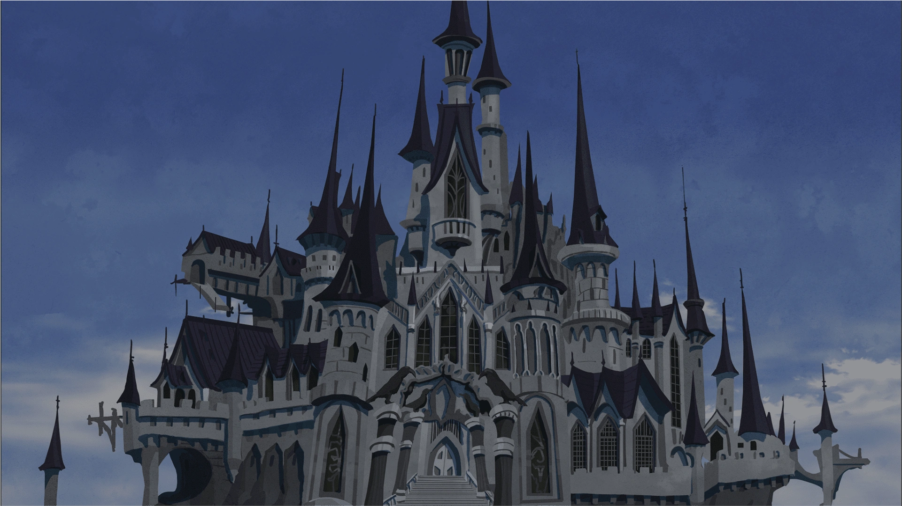
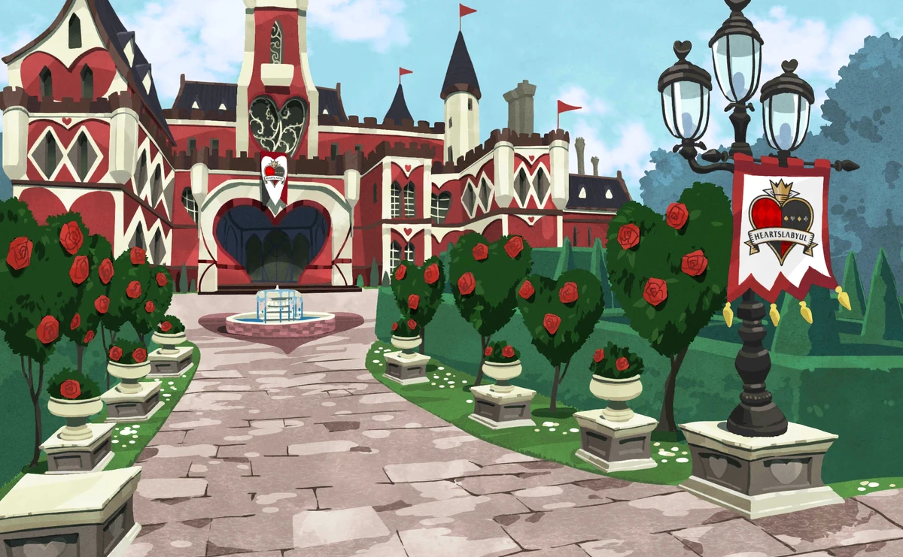
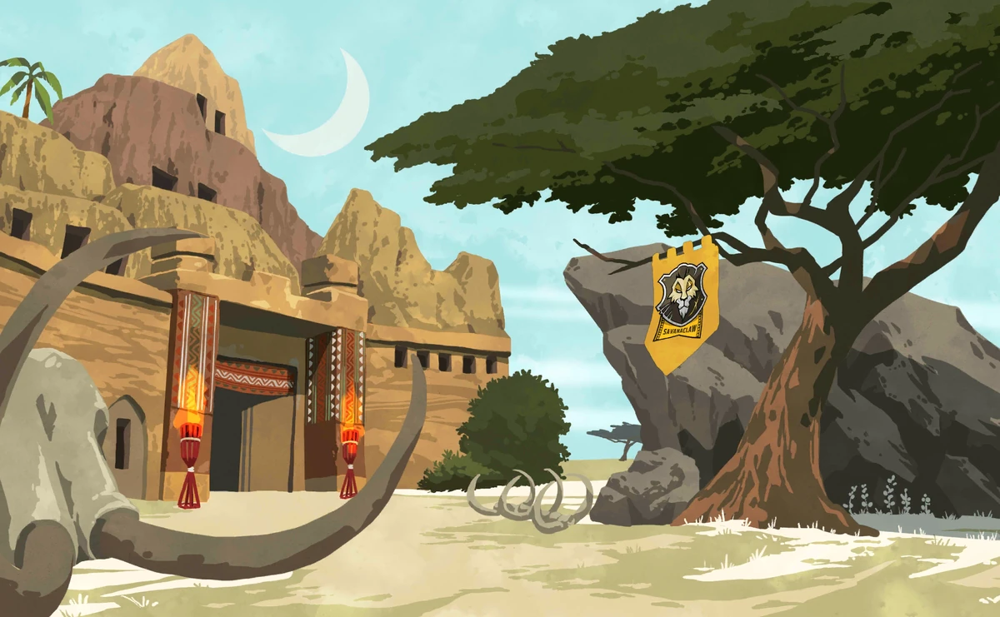
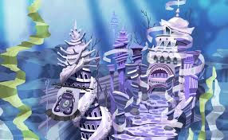
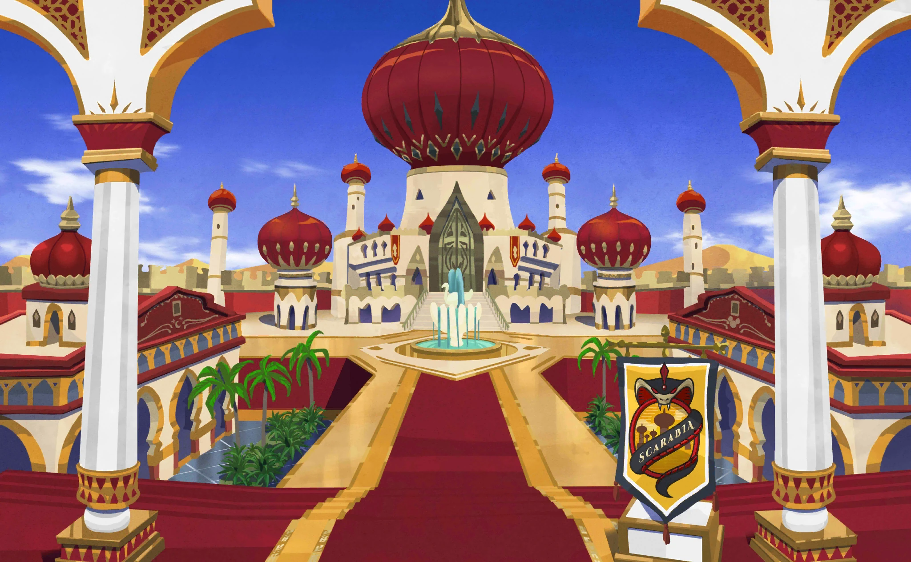
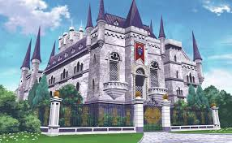
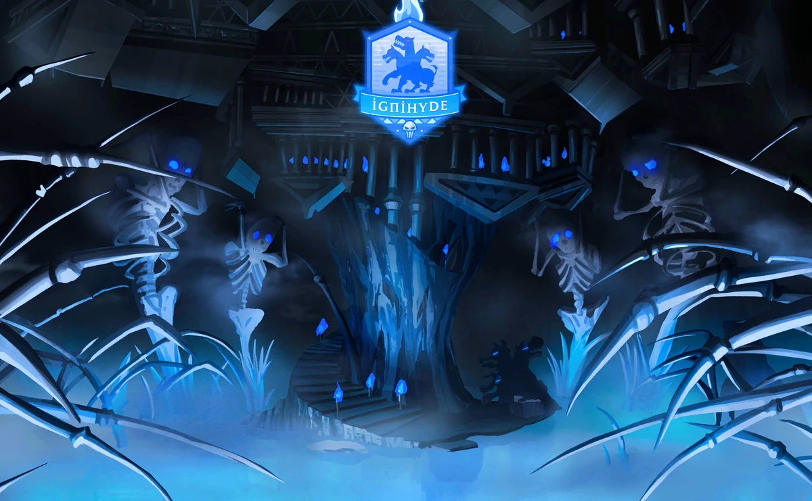
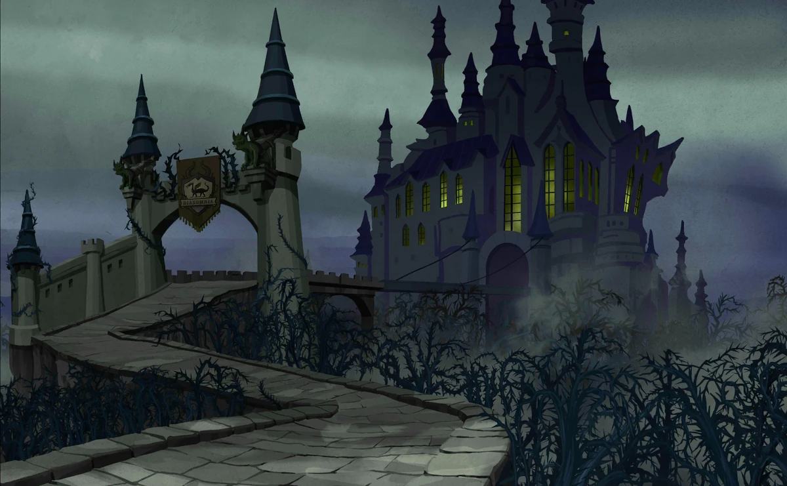
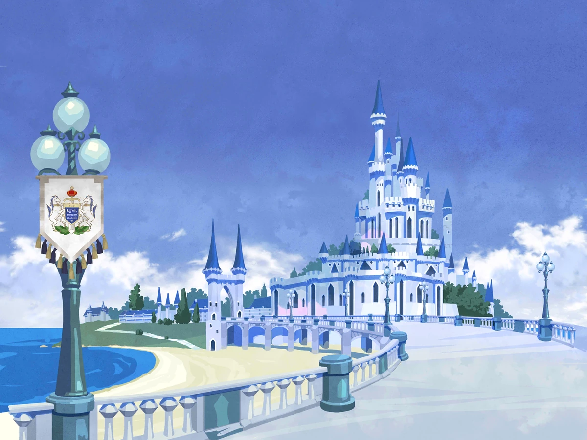

Historia

Welcome to the Villains' World
Yuu llega de forma misteriosa a Twisted Wonderland justo durante la ceremonia de iniciacion de Night Raven College, que termina en desastre cuando Grim aparece y todo se sale de control. Como Yuu no puede volver a su mundo y no tiene magia, Crowley le ofrece quedarse temporalmente en el viejo dormitorio Ramshackle. Poco despues, Grim y un estudiante de primer año, Ace, se pelean y provocan otro problema, asi que para arreglarlo Yuu, Grim, Ace y Deuce, amigo de Ace, deben trabajar juntos y completar una misión para no ser expulsados.

Red Rose Tyrant
Ace rompe varias reglas de Heartslabyul y Yuu, Grim y Deuce quedan atrapados en los castigos de Riddle. Poco a poco se ve que la residencia vive bajo un control extremo inspirado en las reglas de la Reina de Corazones, incluso en situaciones absurdas. La presión termina explotando en un overblot de Riddle, y el grupo debe detenerlo para que Heartslabyul pueda empezar a cambiar.

The Usurper from the Wilds
Justo antes del torneo de Spelldrive, varios jugadores de otros dormitorios sufren accidentes y Yuu con Grim investigan lo que pasa. Todo apunta a Savanaclaw y al plan de Leona para asegurar la victoria por la fuerza, marcado por su frustración de vivir siempre como "el segundo". Cuando la verdad sale a la luz, el conflicto escala hasta su overblot y una batalla que expone su orgullo y su resentimiento.

The Merchant from the Depths
Durante los exámenes finales, varios alumnos mejoran demasiado rápido porque hicieron contratos con Azul en Mostro Lounge. Esos acuerdos le permiten quedarse con habilidades y ventajas de otros estudiantes, así que Yuu y sus amigos deciden romper ese sistema. Entre infiltraciones y negociaciones, todo termina en un overblot de Azul, donde se muestra su miedo a volver a ser débil y su obsesión por tener siempre el control.

The Schemer of the Scalding Sands
Yuu y Grim pasan las vacaciones en Scarabia y descubren que la hospitalidad del dormitorio oculta un conflicto muy serio. Jamil manipula a quienes lo rodean para apartar a Kalim y tomar el control, agotado por años de obediencia forzada y desigualdad entre sus familias. Cuando su plan se quiebra, Jamil cae en overblot y el arco muestra con claridad el peso que llevaba guardado desde hace mucho tiempo.

A Beautiful Tyrant
NRC se prepara para el Song and Dance Championship del festival cultural y Vil lidera el entrenamiento con una disciplina extrema. La competencia contra RSA y la presión por superar a Neige vuelven más fuerte su inseguridad, y el equipo llega al límite físico y emocional. En la recta final, esa obsesión por la perfección y la victoria termina en overblot, obligando a todos a enfrentarlo y replantear qué significa realmente "ser el mejor".

The Watchman of the Underworld
Tras el SDC, Grim desaparece y la búsqueda conecta con STYX, con Ignihyde y con una crisis ligada al estudio del blot. Idia y Ortho quedan en el centro del conflicto, mientras varios housewardens se ven arrastrados a una operación de rescate de gran escala. El arco mezcla combates, tecnología y trauma personal, y culmina en una batalla dura donde también se enfrentan la culpa y el dolor que Idia cargaba desde el pasado.

The Lord of Malevolence
Lo que empieza con actividades escolares y búsqueda de pasantías por parte de los alumnos de tercer año escala a un conflicto mucho mayor relacionado con el poder de Malleus, su soledad y su pasado, todo desencadenado luego de que Lilia dé la noticia de que va a dejar Night Raven College. Profe no me terminé el libro 7, no te puedo hacer un resumen :c

The Enforcer of the Forbidden
TBA